Manual do Organizador Mercadophone
Como transformar a planilha de um cliente no modelo de importação do MercadoPhone: do arquivo bruto até a importação confirmada, sem repetir os erros que já recusaram planilhas antes.
1. O que é o painel
O Organizador recebe a planilha que o cliente exporta do sistema antigo (Excel, CSV, PDF com texto, arquivos legados ou um .zip com várias planilhas), reconhece o tipo, ajusta tudo para o padrão dos modelos de importação do MercadoPhone e mostra o que mudou e o que ainda precisa de atenção.
O processamento acontece no seu navegador. Nada é enviado para o ERP sozinho: você baixa a planilha pronta (ou ela segue para o Google Drive ao confirmar) e importa no MercadoPhone.
| Você faz | O painel faz |
|---|---|
| Escolhe a loja e sobe a planilha | Detecta o tipo e liga cada coluna do cliente à coluna do modelo |
| Confere as colunas e os avisos | Padroniza nomes, datas, valores, EAN, GB, formas de pagamento |
| Compara os totais com o sistema antigo | Gera o Relatório de Validação e confere com o banco de erros |
| Confirma a importação | Envia ao Drive, registra no relatório, avisa no Slack e atualiza a etapa no Customer Center |
2. Como entrar
- Abra o link do painel já logado no claude.ai com a conta da Mercado Phone.
- Na tela de boas-vindas, clique em Entrar no painel.
- O botão Sair (topo) limpa os dados da sessão neste navegador. Tema alterna claro e escuro.
3. Passo a passo da importação
Siga as seis etapas do menu, de cima para baixo. As bolinhas ficam verdes conforme você avança e um número em laranja indica avisos pendentes naquela etapa.
Arquivo: dados da loja e planilha
- Preencha Empresa do cliente (vira o nome da pasta no Drive e aparece nos relatórios).
- Preencha o ID da loja (Unit ID), o Responsável pela migração e o Sistema de origem (ex.: Vhsys, Fone Ninja). Dica: se a loja veio da Fila do CC, tudo isso já vem preenchido.
- Arraste a planilha para a área tracejada ou clique para escolher. Aceita
.xlsx,.xls,.csv,.pdf(com texto),.ods,.dbf,.date.zip. - Se enviar um .zip, o painel lista todas as planilhas dentro (inclusive as sem método de importação mapeado) antes de processar.
Preparar dados: repetidos, filtros e regras
- Linhas repetidas: manter todas, remover idênticas ou remover repetidos por uma coluna. Cuidado: em vendas, o mesmo item lançado duas vezes na mesma venda também é “idêntico”.
- Remover cancelados e filtro por faixa (ex.: datas). Nada é removido sem você marcar.
- Regras da empresa: forma de pagamento padrão, vendedor padrão e “custo ausente = valor de venda”. Use Salvar perfil desta empresa para reaproveitar nas próximas planilhas.
Tipo e colunas
O painel compara as colunas do arquivo com cada modelo e mostra a porcentagem de similaridade. O melhor fica selecionado.
- Se detectou o tipo errado, clique no cartão certo.
- Logo abaixo, a lista de colunas do modelo mostra de qual coluna do cliente cada campo vem. Corrija pelo seletor se estiver trocado. O painel lembra o mapeamento por sistema de origem e já aplica nas próximas lojas daquele sistema.
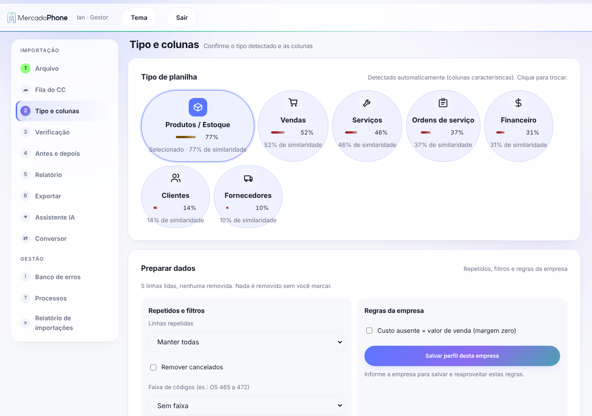
Verificação
Lista o que o painel ajustou sozinho (ex.: nome padronizado, data corrigida) e o que pede atenção (ex.: valor inválido, campo vazio). Cada linha mostra a posição original, o que havia e o que ficou.
- Ajustado: conferir por amostragem.
- Atenção: resolva antes de exportar: corrija na planilha de origem e suba de novo, ou peça ao Assistente IA.
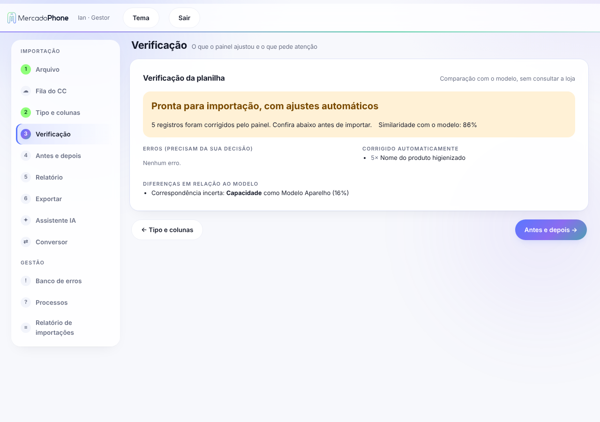
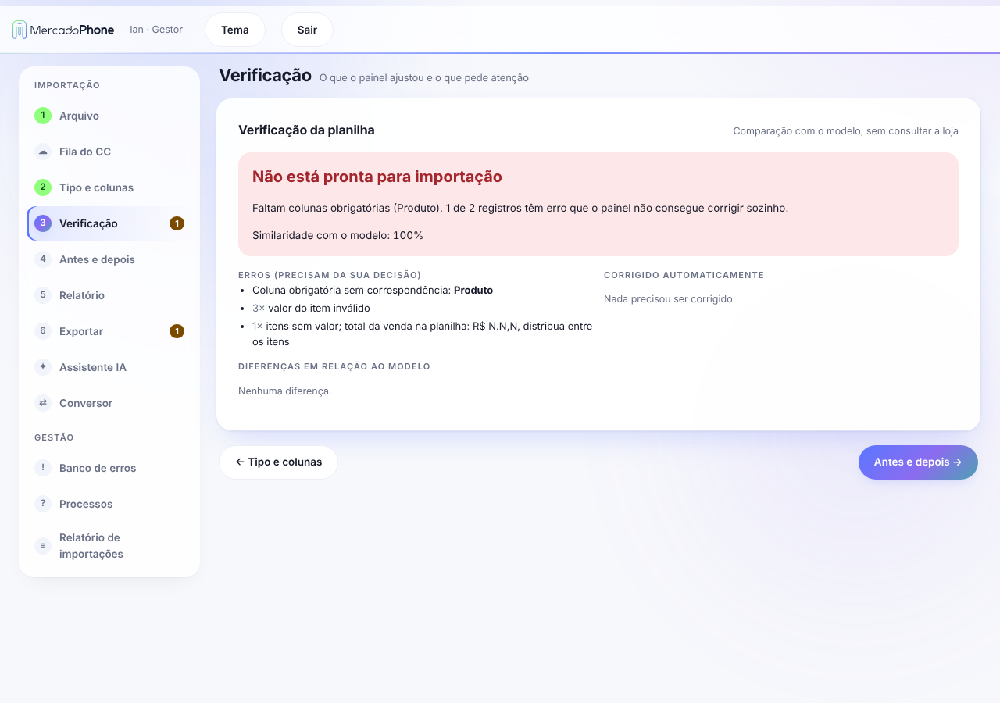
Antes e depois
Mostra lado a lado a planilha original e como ela ficou, com os campos alterados destacados. Use para a conferência visual rápida e para mostrar ao cliente o que mudou.
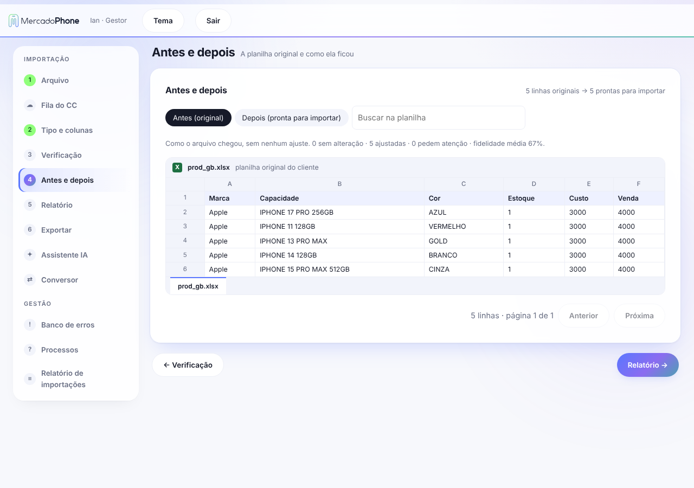
Relatório de validação
É a conferência de números que o cliente pode bater com o sistema antigo:
- Quantidade total de clientes cadastrados
- Quantidade total de vendas processadas
- Faturamento / valor total acumulado
- Quantidade de produtos distintos
A Conferência de totais compara os totais lidos da planilha original com o processado. Se o sistema de origem mostra outro total, digite-o na coluna “Digitado” e veja a diferença. Use Copiar relatório para colar no atendimento.
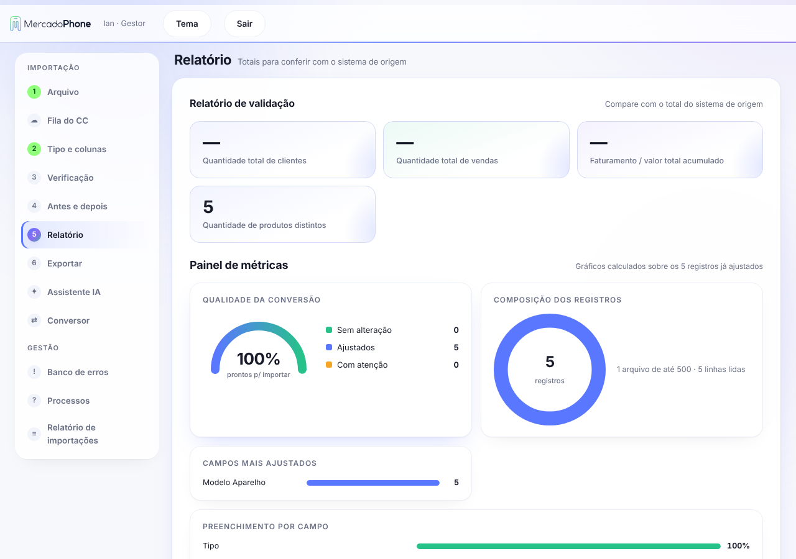
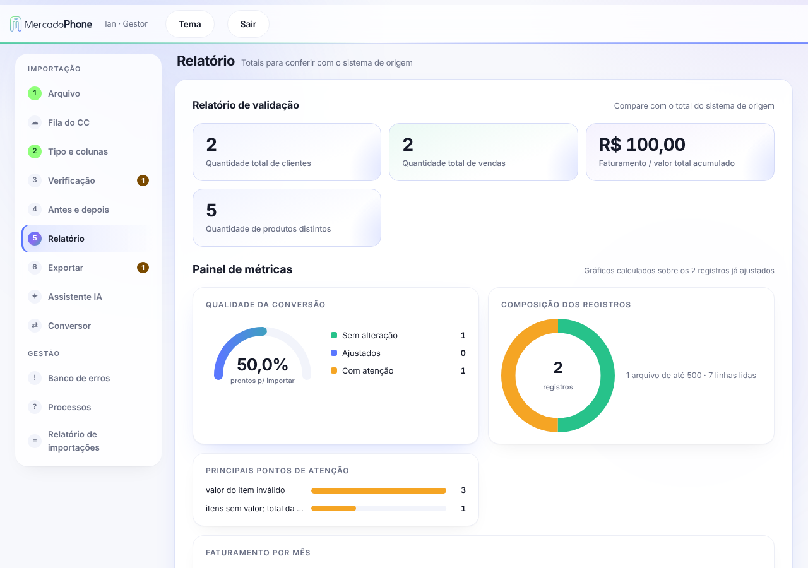
Exportar e registrar
No topo da etapa aparece a Conferência com o banco de erros: o painel passa a planilha por todas as regras de erros já ocorridos e responde se pode importar.
| Resultado | O que fazer |
|---|---|
| OK “Nenhum erro conhecido encontrado” | Pode importar. |
| Erro “Corrija antes de importar” | O ERP vai recusar essas linhas. Veja os exemplos (linha) e corrija. |
| Aviso | Não bloqueia, mas confira. |
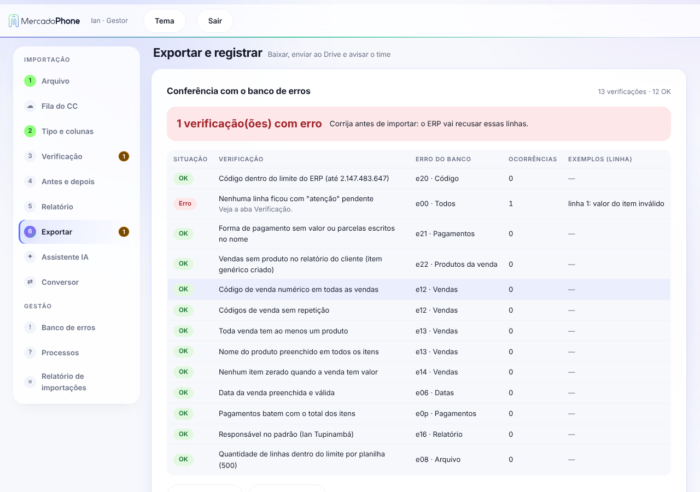
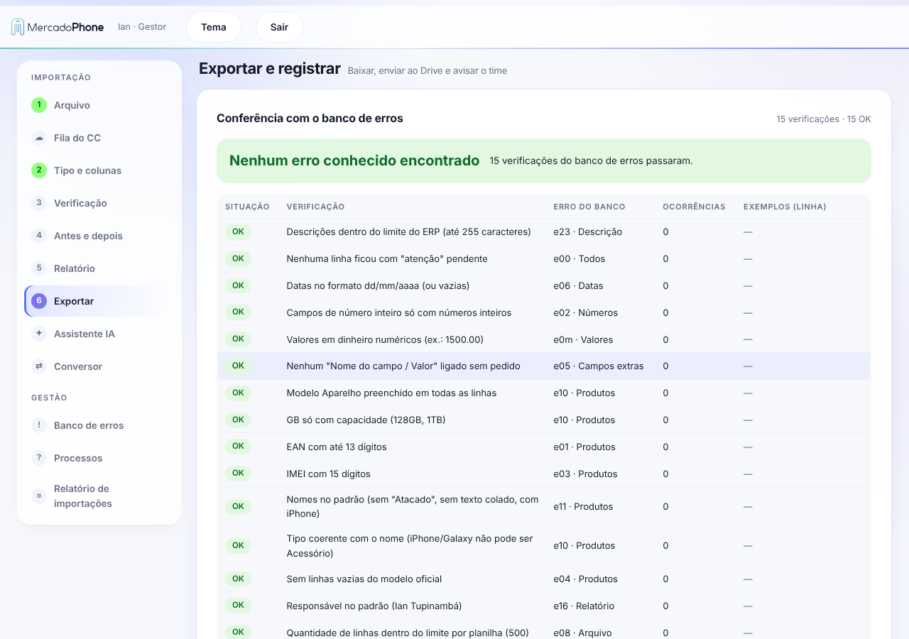
Em seguida, o bloco Exportar e registrar:
- Baixar planilha (ou Baixar lote 1 de N): o limite é de 500 vendas por arquivo (produtos, serviços e OS também 500; clientes, fornecedores e financeiro 1.000); acima disso o painel divide em lotes. Cada download pede sua confirmação.
- Confirmar importação envia os arquivos para o Drive em
Meu Drive / (pasta raiz) / Empresa(as pastas são criadas se não existirem), registra no relatório e avisa no Slack. Se o Drive falhar, use Reenviar ao Drive. - Se enviou várias planilhas na fila, o botão vira Confirmar importação das N planilhas.
- Há também Exportar Excel, Exportar PDF e Exportar apresentação (PPTX) do relatório. A apresentação é um slide só: no campo Período escolha a semana (últimas 12) ou o mês (últimos 6): o dashboard inteiro (indicadores, gráficos, tabelas, comparativo e sistemas) é atualizado para o período escolhido e o slide exportado usa o mesmo período. Ele traz o resumo do período (importações, registros, empresas, valor conferido, % sem pendência e confirmadas no Slack, cada um comparado com o período anterior), as planilhas mais importadas por tipo, os sistemas que mais importamos (no mês, %, lojas e histórico) e as pendências do mês.
4. Tipos de planilha
| Tipo | Serve para | Cuidados principais |
|---|---|---|
| Produtos / Estoque | Cadastro e estoque | Nome padronizado, GB separado, EAN até 13 dígitos, IMEI com 15, linhas vazias do modelo ignoradas |
| Vendas | Venda, itens e pagamentos | Código de associação único, ao menos um produto por venda, data válida, pagamentos batendo com o total |
| Clientes | Cadastro de clientes | Datas dd/mm/aaaa, documentos e telefones limpos |
| Fornecedores | Cadastro de fornecedores | Campos obrigatórios do modelo |
| Serviços | Catálogo de serviços | Valores numéricos |
| Ordens de serviço | Histórico de OS | Datas, status, forma de pagamento e vendedor padrão |
| Financeiro | Contas a pagar e receber | Tipo de movimentação obrigatório (1 = receita, 2 = despesa) |
5. O que o painel padroniza sozinho
Nomes de produtos
Capitalização e grafia oficiais do mercado: iPhone 17 Pro Max, Redmi Note 7, Samsung Galaxy S25. O painel separa texto colado (IPHONE17PROMAX vira iPhone 17 Pro Max), coloca o prefixo “iPhone” quando o arquivo só traz “17 Pro Max” e remove caracteres estranhos. Palavras como Atacado saem do nome e vão para a observação.
Capacidade (GB)
A coluna GB recebe só a capacidade. Se o cliente colocou o nome do aparelho na coluna de GB, o painel troca as colunas sozinho.
Datas
Saída sempre em dd/mm/aaaa. Se o arquivo todo usa mês-dia-ano (ex.: 04-25-24), o painel detecta e converte.
Vendas com vários itens e pagamentos
O Código de associação liga a venda, os produtos e as formas de pagamento da mesma venda: Venda #123 → Produto #123 → Pagamento #123. O código precisa ser numérico e único por venda.
Forma de pagamento com valor escrito junto
Quando o cliente traz algo como R$ 1399.00 DINHEIRO ou 2 X R$ 89.50 CARTÃO CRÉDITO VISA, o painel separa: a forma fica só DINHEIRO, o valor vai para a coluna Valor (parcelado: 2 × 89,50 = 179,00) e as parcelas vão no Detalhe. Se a venda tem um item sem valor, usa o total dos pagamentos. “MÚLTIPLAS” não dá para dividir e fica como atenção.
Vendas sem produto no relatório
O ERP recusa venda sem produto (“Venda código X: Nenhum produto informado”). Se o relatório do cliente traz só o código e o pagamento, o painel cria em cada venda o item Produto não informado (quantidade 1, valor = total dos pagamentos) e avisa na Verificação e na conferência (e22). Se o cliente tiver o relatório de itens vendidos, use ele para trocar o item genérico.
Financeiro
O tipo de movimentação é lido de palavras como receita, receber, entrada (→ 1) e despesa, pagar, saída (→ 2). Sem texto, usa o sinal do valor (negativo = despesa) ou o nome do arquivo. Se não der para saber, aparece aviso para você preencher.
6. Banco de erros
Menu Gestão → Banco de erros. É a lista de tudo que já deu problema na importação, com causa, regra aplicada e situação. Alimenta a conferência da etapa 6.
- Para registrar um erro novo, descreva o erro do ERP e clique em Registrar e aprender: ele entra na lista e passa a valer nas próximas conferências.
- Copiar lista e Baixar .xlsx exportam o banco.
- Erros ainda sem solução ficam como “Pendente” até termos o arquivo do cliente.
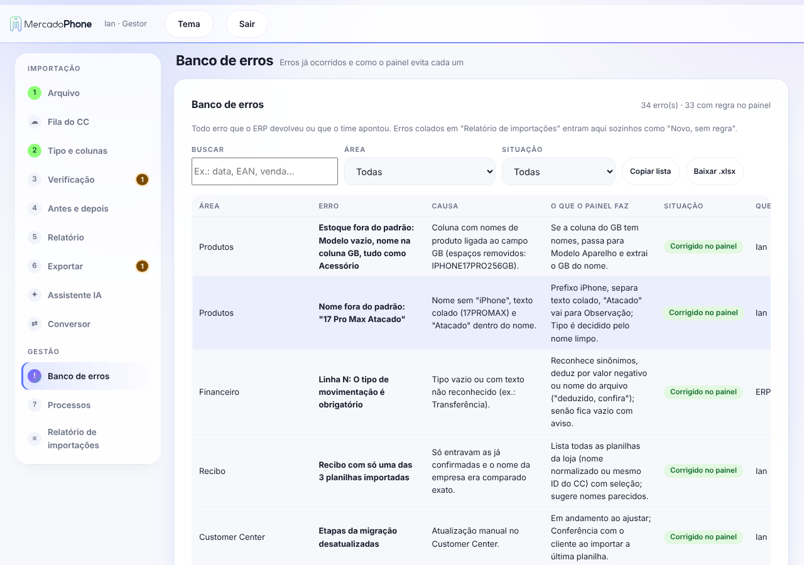
7. Assistente IA
Menu Assistente IA. Converse sobre o erro (ex.: “Venda código 8: Nenhum produto informado”) e ele ajusta a planilha em andamento: lê linhas, procura valores, edita células, muda o mapeamento de colunas e as regras da empresa.
- Cole a mensagem de erro do ERP e envie.
- Ele mostra o que alterou. Na primeira vez, o claude.ai pede sua permissão para o assistente funcionar.
- Não gostou? Desfazer volta o último ajuste. Nova conversa limpa o chat.
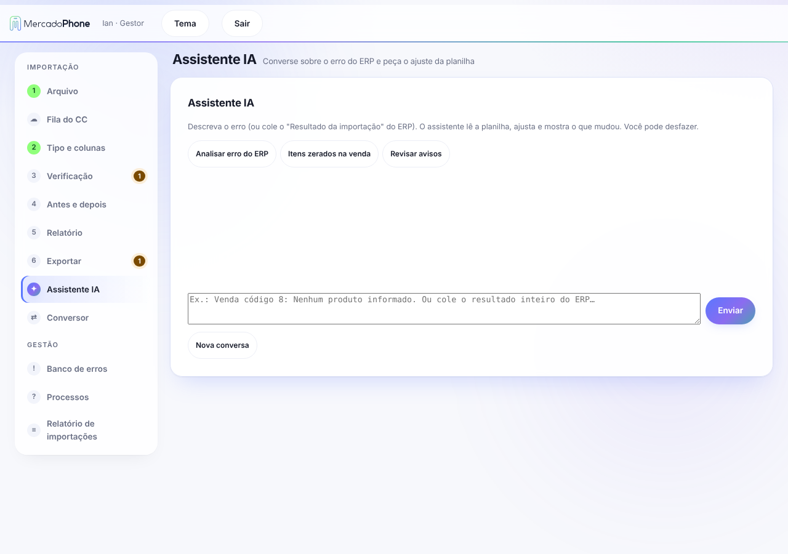
8. Fila do Customer Center
Menu Fila do CC. Lista os pedidos de migração em aberto, com prazo de 5 dias úteis (do recebimento dos dados até a confirmação no painel). Ao escolher a loja, empresa, Unit ID, responsável e sistema de origem são preenchidos.
| Etapa no CC | Quando muda |
|---|---|
| Solicitada | Cliente pediu a migração |
| Dados recebidos | Equipe recebeu os arquivos |
| Em andamento | Automático: ao processar a planilha da loja no painel |
| Conferência com o cliente | Automático: ao confirmar a última planilha |
| Concluída | Depois que o cliente conferir |
O painel também permite Processar lote em sequência (várias lojas marcadas) e Copiar mensagem para o cliente quando falta planilha.
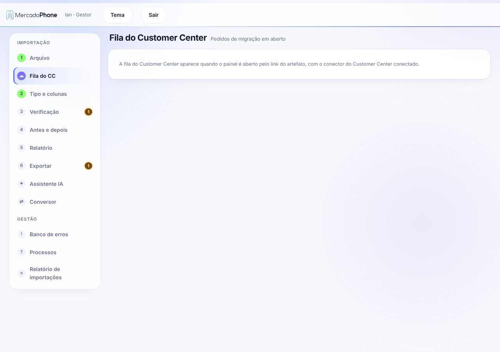
9. Relatório de importações
Menu Gestão → Relatório de importações. Mostra o que foi importado, por empresa, tipo e responsável: importações confirmadas, empresas, registros, valor movimentado, última importação, comparativo semanal/mensal e % no prazo. O gestor filtra por usuário.
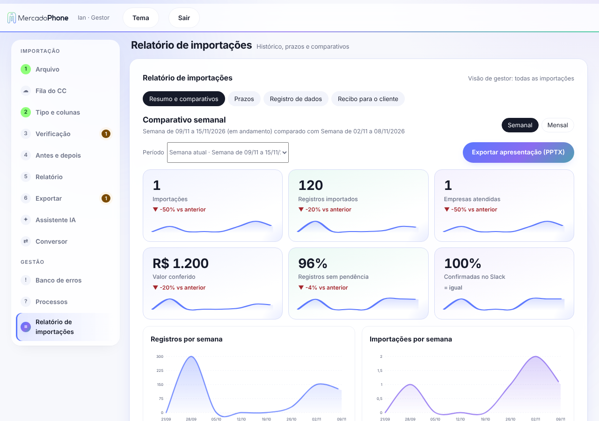
9c. Conversor de planilhas
Menu Importação → Conversor. Serve para abrir qualquer arquivo que o cliente mandar, ver a tabela que ele contém e baixar a versão convertida, sem precisar passar pelo fluxo completo.
- Envie os arquivos (vários de uma vez): planilhas (.xlsx, .xls, .ods, .csv), binários/legados (.dbf, .dat, .bin ou sem extensão), PDF com texto, PDF escaneado e imagens (leitura por OCR com IA) e .zip com vários arquivos.
- Cada tabela encontrada aparece em um cartão, com linhas, colunas, como foi lida e o tipo detectado (Clientes, Produtos, Vendas…). Troque o tipo no seletor se estiver errado. Use Ver prévia para conferir as primeiras linhas.
- Em Converter para escolha o formato: .xls (Excel 97-2003, padrão), .xlsx ou .csv. O botão Baixar de cada cartão entrega só aquela tabela; Baixar todas as planilhas (.zip) entrega todas em um arquivo; Baixar todas, uma por vez baixa cada uma separada (pede a confirmação de cada download). O .xls aceita até 65.536 linhas: acima disso o painel entrega em .xlsx. Se o aviso de salvar não abrir depois de montar o .zip, aparece o botão Salvar o .zip pronto: clique nele para abrir o aviso de novo. Se alguma tabela não couber no .xls (mais de 65.536 linhas), ela é salva como .xlsx dentro do .zip.
- Baixar por tipo e modelo (.zip) gera os arquivos já no modelo de importação do MercadoPhone, em uma pasta por tipo, e mostra o resumo (registros, ajustados, com atenção).
- Abrir no painel leva a tabela para o fluxo normal (Tipo e colunas → … → Relatório), que é onde acontece a conferência de totais.
Cuidados: os arquivos “por tipo e modelo” não passam pela conferência de totais; para importar de verdade, abra a origem pelo fluxo normal. Dados lidos por OCR podem ter erros de leitura: revise a prévia. PDFs escaneados leem até as 40 primeiras páginas. Se o OCR não estiver liberado na abertura do painel, o Conversor avisa e os demais formatos continuam funcionando.
9b. Aba Processos
Menu Gestão → Processos. Traz dentro do próprio painel o resumo deste manual em tópicos que abrem e fecham: fluxo geral, cada uma das 6 etapas, padronização automática, o que fazer quando o ERP recusa, etapas do CC e recibo. O botão Abrir manual completo (com imagens) leva a esta página.
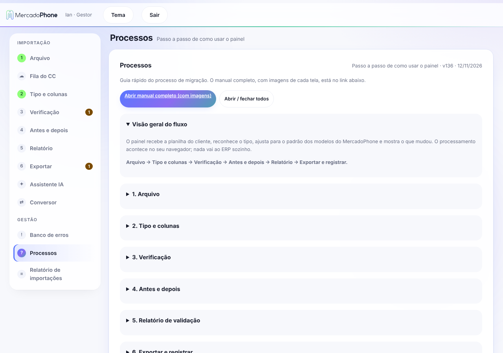
10. Recibo de importação
O botão Gerar recibo (PDF) lista todas as planilhas importadas da loja (pelo Unit ID ou nome parecido), com caixinhas para marcar o que entra no recibo. Se a loja tem planilhas de várias empresas parecidas, escolha a empresa no seletor e confira as marcadas antes de gerar.
11. Problemas comuns
O que mudou nos gráficos e no visual?
O painel tem efeitos de movimento (fundo, menu, botões e gráficos que se desenham ao abrir). Quem prefere menos movimento pode ativar “reduzir movimento” no sistema: o painel respeita. No Relatório de importações há gráficos de evolução (registros, importações, qualidade e valor conferido), mix por tipo, mapa de calor de quando importamos e mini gráficos nos indicadores. No Relatório de cada planilha há gráficos por tipo: clientes por estado e cidade, completude de contatos, produtos por marca, faixas de estoque e margem, vendas por dia da semana, mais vendidos e vendedores, e ordens por situação. Passe o mouse sobre os pontos e barras para ver o valor.
Qual o tamanho máximo da planilha?
Até 15 MB por planilha (cerca de 200 mil linhas de produtos). Arquivo maior aparece com o aviso “Arquivo acima de 15 MB não é processado” e não é lido: divida em partes menores e envie de novo. Planilhas grandes levam alguns minutos (cerca de 1 minuto e meio para 15 MB); acompanhe pela barra de progresso e não feche a aba.
O ERP recusou a planilha. O que faço?
Cole a mensagem de erro no Assistente IA ou registre no Banco de erros. Corrija, gere de novo e confira a etapa 6 até aparecer “Nenhum erro conhecido”.
“Linhas 16 a 19: O tipo de movimentação é obrigatório”
Financeiro sem tipo. O painel deduz pelo texto, pelo sinal do valor ou pelo nome do arquivo. Se avisar que não identificou, preencha 1 (receita) ou 2 (despesa).
Estoque saiu fora do padrão (GB com nome de aparelho)
Confira na etapa 2 se a coluna Modelo/Nome está ligada à coluna certa. O painel corrige quando o nome está na coluna de GB.
Datas aparecem trocadas (mês e dia)
O painel detecta arquivos mês-dia-ano. Se ainda assim ficar errado, mapeie a coluna de data manualmente na etapa 2 ou peça ao Assistente IA.
Venda sem produto / produto sem valor
Se o relatório do cliente não traz produto algum, o painel cria o item “Produto não informado” com o valor dos pagamentos. Confira o código de associação (numérico e único). Quando só o primeiro item traz o valor da venda, falta a fonte dos valores por item: peça ao cliente o relatório de itens vendidos.
No recibo apareceu só uma planilha
Marque as demais na lista do recibo; o painel lista todas as da loja pelo Unit ID e por nomes parecidos.
Subi um PDF e o painel não puxou os dados (ou veio tudo quebrado)
O painel lê PDF que tenha texto (não serve PDF escaneado/imagem). Relatórios de OS (inclusive PDF de várias páginas impresso pelo navegador, com cabeçalho repetido e data/rodapé em cada página), com células de várias linhas e códigos com # (ex.: #11963182423) agora são lidos corretamente: o # sai do código e o cabeçalho “Criado em:” vira Data Criação. Se ainda vier errado, confira as colunas na etapa 2 ou peça a planilha original (.xlsx) ao cliente.
ERP: “Numeric value out of range … column 'codigo'”
O código da OS/venda passou do limite do ERP (2.147.483.647, ou seja, 10 dígitos). O painel corrige sozinho: se todos os códigos terminam igual (ex.: #13934282423 = OS 139342 + sufixo fixo 82423), tira o sufixo e a OS vira 139342. Sem sufixo comum, renumera em sequência. O número original fica na Observação interna (“Nº original da OS”) e a Verificação lista cada troca.
O total de registros ficou menor que o do PDF
Confira o card certo na etapa 5: Quantidade total de vendas mostra o total de OS (ex.: “2.172 OS”); Quantidade total de clientes conta cada cliente uma vez e por isso é menor. Se o total de OS for menor que o do PDF, envie o PDF para ajuste.
Relatório com valores impossíveis (quatrilhões, quantidade gigante)
Quase sempre uma coluna do cliente foi ligada ao campo errado (ex.: código, telefone ou texto lido como quantidade/valor). O painel agora marca como atenção qualquer quantidade acima de 100.000 ou valor acima de R$ 10.000.000 e não deixa o número absurdo entrar no relatório. Corrija na etapa 2 (Tipo e colunas) a coluna ligada a Quantidade e Valor Unitário.
ERP: “Data too long for column 'descricao'”
Alguma descrição ou nome passou de 255 caracteres (ex.: relato completo do cliente no campo de descrição do serviço). O painel corta em 255 (no último espaço) em Serviços, Produtos, OS (serviço, peça, aparelho) e nos produtos das vendas, e a Verificação lista cada corte. Se o texto completo for importante, coloque-o em Observação na planilha de origem.
O Drive falhou ao confirmar
Use Reenviar ao Drive. A importação já fica registrada no relatório.
Planilha .xls que na verdade é HTML (valores gigantes ou erro “descricao”)
Alguns sistemas exportam “.xls” que é uma página HTML. O painel agora lê esses arquivos como texto: “399,00” fica R$ 399,00, a quantidade “1,000000” fica 1, e uma célula de Pagamento com várias formas (“R$ 149,90 CARTÃO… R$ 149,90 CARTÃO…”) vira uma linha por forma na aba Pagamentos. Confira na Verificação a mensagem “várias formas de pagamento na mesma célula”.
Financeiro: “Valor do pagamento deve ser maior que zero” ou “Data do pagamento é obrigatória”
O ERP considera que existe pagamento quando a linha tem forma, valor pago ou data de pagamento. O painel agora garante o conjunto: sem valor e sem data pagos, a forma é removida e o título fica em aberto; valor pago sem data usa o vencimento; data sem valor usa o valor do título. A Verificação lista cada ajuste.
Financeiro: “Título é obrigatório”
Quando a planilha não traz título, o painel usa a categoria, as observações ou “Lançamento - nome da pessoa”. Cada caso aparece na Verificação; se quiser outro texto, preencha a coluna de título antes de enviar.
Financeiro: “Valor é obrigatório” ou “Valor deve ser maior que zero”
O painel usa o valor pago quando o valor total está vazio. Se a linha não tem valor nenhum, ela aparece como erro na Verificação (e27): peça o valor ao cliente ou remova a linha da planilha, pois o ERP não aceita lançamento sem valor.
Financeiro: erros repetidos em blocos (“Data de vencimento é obrigatória”, “Valor é obrigatório”)
Quando o erro se repete em blocos regulares (ex.: linhas 41, 75, 109…), são linhas de total, quebra de página ou rodapé do relatório, não lançamentos. O painel descarta cabeçalhos de página (“Relatório emitido em…”, “SITUAÇÃO…”), totais de rodapé e linhas sem data e sem pessoa, e mostra quantas foram removidas. Sem vencimento, usa a data de competência/emissão.
Estoque, pessoas ou outro relatório convertido de PDF (colunas repetidas, custo/venda zerados, cabeçalho em toda página)
Quando o cabeçalho tem rótulos mesclados (o mesmo texto em colunas vizinhas), o painel agrupa as colunas pelo cabeçalho e pega o primeiro valor de cada bloco; isso corrige custo e venda zerados. O painel junta colunas de texto repetidas (células mescladas), usa como cabeçalho a linha com mais rótulos diferentes e remove cabeçalhos e rodapés repetidos a cada página (“Relatório emitido em…”, nome da empresa). Linhas com documento mas sem nome ficam como atenção (“sem nome”).
Vendas: “Column data_venda cannot be null” e quantidade de produtos vendidos absurda
Venda sem data (ou com data inválida) usa a data da venda anterior, ou a de hoje se for a primeira, e a Verificação avisa. Quantidade de item precisa ser inteira e até 1.000; valores com decimais ou enormes (coluna de valor lida como quantidade) viram 1 e ficam como atenção, para você conferir a coluna de quantidade no mapeamento.
Histórico de vendas detalhado (um bloco por venda)
Relatórios que trazem NÚMERO, DATA, CLIENTE e VENDEDOR no topo e, abaixo, a lista de itens e pagamentos, são convertidos automaticamente: cada bloco vira uma venda. O troco é descontado do pagamento em dinheiro, o acréscimo (juros) é somado ao valor do 1º item e anotado em Observações, e vendas sem itens listados recebem o item “Produto não informado” com o total da venda. Se o número da venda se repete (PDV/NFCE), o painel renumera e guarda o número original em Observações. Esse relatório normalmente não traz custo: o custo fica zerado.
Vendas com valores gigantes vindas de CSV (4.290,00 virou 4,29 ou 1,00 virou 100)
Acontecia quando o CSV tinha números no formato brasileiro e o leitor os tratava como número comum. Desde a v110 todo CSV/TXT é lido como texto e convertido pelo padrão brasileiro. Também corrigimos o desconto: colunas como “Valor Desconto Pedido” (o mesmo valor em todas as linhas do pedido) agora são descontadas uma vez só, no primeiro item. Confira na etapa 5 que “Faturamento” e “Vendas” batem com a planilha.
Copiar um resumo para mandar no canal
No Relatório de importações (aba Registro de dados), cada importação tem o botão Copiar resumo e há também Copiar resumo dos filtrados (totais de planilhas, empresas e registros das importações filtradas, sem listar uma por uma). Na etapa 5 (Relatório) e na etapa de exportação há o botão Copiar resumo para o canal. Ele copia uma mensagem pronta (formato do Slack) com empresa, tipo, arquivo, os totais do relatório, o resultado da conferência, as linhas descartadas e o status do piloto no ERP. Basta colar no canal.
“Importação bloqueada: confira antes de seguir”
Desde a v108 o painel não deixa baixar os lotes nem confirmar quando algum total não bate (rodapé da planilha, valor digitado ou soma da planilha) ou quando sobra linha sem explicação. Veja o motivo no quadro vermelho da etapa de exportação, marque “Conferi e entendo a diferença” e escreva a justificativa (ex.: “12 vendas canceladas no filtro”). A justificativa fica no relatório de importações. O piloto de 20 registros continua liberado.
Auditoria das linhas: o que o painel descartou?
Na etapa 5 (Relatório), o quadro “Auditoria das linhas” mostra: linhas lidas = descartadas + usadas, e a lista de cada linha descartada com o número, o motivo (cabeçalho repetido, total/rodapé, título acima do cabeçalho, regra do tipo) e o conteúdo. Se a conta não fechar, o painel avisa e bloqueia. Confira a lista antes de importar: se uma linha de dado real aparecer ali, avise para ajustarmos a regra.
Conferência automática de totais (rodapé da planilha)
Se o relatório do cliente traz uma linha de total no rodapé (ex.: “TOTAL DE VENDAS: 2.143.680,60”), o painel lê esse valor sozinho e compara com o que foi processado. Na etapa 5 aparece “Bateu com rodapé da planilha” ou “Não bateu” com a diferença. Você ainda pode digitar outro total na coluna “Digitado”, que tem prioridade.
Teste no ERP antes de importar (piloto)
Na etapa de exportação, use Baixar piloto (20 registros): metade são os casos mais difíceis (ajustados ou com atenção). Importe numa loja de teste do ERP e marque “Importou sem erros” ou “Deu erro no ERP”. O resultado do piloto vai junto no registro da importação.
Deu erro no piloto: como abrir a tarefa no Linear
Marque “Deu erro no ERP”, cole a mensagem do erro e clique em Copiar tarefa do Linear. O texto já vem com empresa, tipo, arquivo, totais e versão do painel, e sugere o projeto ERP Manutenção (toda tarefa do Linear precisa de projeto; troque se houver um mais adequado). O painel não cria a tarefa sozinho: cole no Linear.
Buscar a planilha direto no Google Drive
Na etapa 1, abaixo da área de upload, abra “Ou buscar a planilha no Google Drive”, digite parte do nome do arquivo ou da loja e clique em Usar. Funciona com xlsx, xls, csv, Google Sheets e PDF que estejam no seu Drive ou compartilhados com você. Só funciona abrindo o painel pelo link do artefato.
Baixar tudo em uma planilha só ou dividir em lotes
Na etapa de exportação, em Como baixar, escolha entre Dividir em lotes (padrão, até 500 vendas/produtos/serviços/OS ou 1.000 clientes/fornecedores/financeiro por arquivo) e Tudo em uma planilha só. Arquivo único grande pode demorar ou ser recusado pelo ERP; nesse caso o painel avisa. Teste antes com o piloto. A escolha vale para o download, o envio ao Drive e o registro de lotes.
ERP: “Data truncated for column 'origem'” (em todos os itens de produtos)
A coluna Origem do ERP é o código fiscal da mercadoria, de 0 a 8 (0 = Nacional). Quando a planilha do cliente trazia texto livre ali (Compra, Loja, Importado...), o ERP recusava todas as linhas. Desde a v115 o painel só envia o código: “Nacional” vira 0, e qualquer outro texto é apagado e a linha fica como atenção. Se o cliente quiser outra origem, informe o código 0 a 8 na planilha de origem.
Memória RAM preenchida sem ter o dado na planilha / “-” nas colunas
O painel só preenche a Memória RAM quando a planilha tem uma coluna com “RAM” no nome (ou quando o nome do produto traz a RAM, como “M1 8/512GB”). Uma coluna chamada apenas Memória (256, 128…) é armazenamento e vai para GB. Além disso, células que trazem só “-”, “N/A”, “#N/A” ou “null” são tratadas como vazias em todos os modelos: o Serial Number, o Valor de atacado e demais campos ficam em branco em vez de “-” ou 0,00.
ERP: “Venda código X: Nenhum produto informado” e vendas juntas por nº repetido
Dois problemas em relatórios de vendas, corrigidos na v121. (1) As linhas finais TOTAIS / Linhas: / Quantidade: do relatório eram lidas como vendas sem produto; agora são descartadas (aparecem na Auditoria das linhas) e os totais “Linhas” e “Quantidade” entram na conferência. (2) Em relatórios de várias lojas, o Nº da venda se repete entre lojas e entre tipos (Venda balcão, Ordem de serviço…). Quando isso acontece, o painel separa as vendas por Nº + Loja + Tipo (a combinação que deixa cada venda com um único cliente), gera novos códigos e avisa no Relatório de validação (“Aviso: nº da venda repetido”). Se você já importou uma planilha gerada antes da v121 desse tipo de relatório, refaça: ela tinha vendas de clientes diferentes juntas na mesma venda.
Quem é marcado no aviso do Slack ao confirmar a importação
Quando a importação vem de um pedido da Fila do CC, o aviso “Importado com sucesso” marca com @ no Slack o operador que enviou as planilhas ao Customer Center (campo Enviado ao CC por). O painel procura o nome no Slack; se achar exatamente uma pessoa, a marcação notifica o operador. Se não encontrar, ou houver mais de uma pessoa com o mesmo nome, o aviso mostra apenas o nome em texto, sem marcar ninguém. Importações sem pedido do CC não marcam ninguém.
Custos fixos: planilha só com o dia do vencimento
Quando o arquivo financeiro traz apenas a coluna Dia (ex.: custos fixos mensais), o painel monta o vencimento com esse dia e o mês de referência. Por padrão é o mês atual; para outro mês, preencha Mês de referência (MM/AAAA) em Preparar dados › Regras da empresa. O tipo da movimentação é deduzido como despesa (2) quando o nome do arquivo ou da aba tem “custos”, “contas a pagar” ou “despesas”, e como receita (1) quando tem “receber” ou “receitas”. A coluna Tipo de Recorrência (Mensal) não é usada como tipo. Os lançamentos ficam como ajustados e o total é conferido com o rodapé.
Como o painel confere com o rodapé da planilha (todos os modelos)
Para qualquer tipo (clientes, fornecedores, produtos, serviços, vendas, OS e financeiro), o painel lê os totais impressos no rodapé da planilha, inclusive quando vêm todos em uma única célula (ex.: “Quantidade de Contas 1233 · Valor Original Total R$ 4.647.052,15”), e compara com o resultado na Conferência de totais. São reconhecidos nomes como Quantidade de clientes/produtos/contas/pedidos, Valor Original/Bruto e Total geral. Totais do rodapé que não têm campo equivalente no painel aparecem em uma linha de consulta abaixo da tabela. Se algo não bater, a exportação fica bloqueada até você justificar.
Contas a pagar/receber: total diferente do rodapé da planilha
Em planilhas de contas, o painel usa a coluna Valor Original como Valor Total, para bater com o “Valor Original Total” e a “Quantidade de Contas” do rodapé (antes o painel somava o Valor Baixado, que desconsidera contas em aberto e juros/descontos). O Nome da Despesa vai para o Título e o valor efetivamente pago continua no campo Valor Pagamento. O rodapé é lido mesmo quando vem em uma única célula e entra na conferência de totais.
Contas a receber (boletos/Pix de gateway): “0 prontas para importar”
Relatórios com colunas Data da compensação, Valor de transação, Valor total a receber e Situação (Aguardando/Compensado) agora são lidos assim: Data da compensação = Data de Vencimento; Valor de transação (bruto) = Valor Total, com Taxas na coluna de taxa; Data da transação = Data de Pagamento. Linhas Compensado entram como pagas (valor, data e forma Boleto/Pix); Aguardando ficam em aberto. O nome da pessoa é tirado da Descrição (o que vem depois do código, sem “Boleto 8/8” nem “(Venda expressa)”); “Não informado” fica sem pessoa. Se preferir o valor líquido, troque a coluna no mapeamento.
ERP: “Valor deve ser maior que zero” no Financeiro
Lançamentos com valor R$ 0,00 na planilha original (ex.: “Compra de nº 593” zerada) não são exportados, porque o ERP recusa a importação inteira por causa deles. Eles aparecem em Antes e depois como removidos, com o motivo. Se o lançamento precisa existir, corrija o valor na origem e envie de novo.
Produtos de PDF: nomes com “Empresa … Período” e erro “Duplicate entry … PRIMARY” no ERP
Em listagens de produtos em PDF, o painel remove o cabeçalho que se repete a cada página (nome da empresa, endereço, “Listagem de Produtos Resumido”, período) do nome do produto, não usa o telefone do cabeçalho como código de barras e ignora o rodapé “QTD PRODUTOS”. Códigos de barras repetidos em vários produtos são limpos. Se o ERP ainda responder “Duplicate entry … for key PRIMARY”, uma importação anterior da mesma loja provavelmente já gravou parte dos produtos: confira no ERP o que já foi cadastrado antes de importar de novo, e importe em arquivos de até 500 linhas (o painel já divide assim; não junte os lotes).
Estoque de bike, patinete ou moto elétrica (chassi e motor)
Planilhas com as colunas Chassi e Motor (ex.: controle de entrada de e-bikes) são lidas como Produtos / Estoque. O Chassi vai para o campo IMEI (mantendo letras e números) e o Motor para o Serial Number. A categoria sai como Bike/Patinete e a classe como Aparelho (0); o Tipo continua “Celular”, pois o ERP só aceita Celular, Acessório, Peça e Serviço. Na aba do tipo, em Preparar dados › Classes de produto no arquivo, a caixa Bike/Patinete permite tirar essas linhas da exportação (elas ficam em “Filtrados”). Recomenda-se importar primeiro o piloto de 20 registros.
Quero escolher em quantas planilhas dividir
Na aba Exportar, em “Como baixar”, escolha Dividir em __ planilhas e digite o número. O painel reparte os registros em arquivos de tamanho igual (ex.: 5.772 produtos em 3 planilhas = 1.924 por arquivo) e mostra quantos ficam em cada um. Se o tamanho passar do recomendado para o tipo (500 na maioria), aparece um aviso, pois o ERP pode recusar arquivos grandes. Cada planilha continua pedindo a sua confirmação de download.
Relatório de clientes com os títulos repetidos em todas as linhas
Alguns sistemas exportam cada linha como “CÓD., NOME/RAZÃO, CPF/CNPJ, … , 5691, ABEL MARTINS, 148.203…, QTD CLIENTES:, 6171”. O painel detecta esse padrão, usa os rótulos como cabeçalho, descarta as colunas finais repetidas e usa o “QTD CLIENTES” como total para conferir com a quantidade importada. Telefones só com máscara vazia “( ) -” ficam em branco; se a coluna TELEFONE estiver vazia ou inválida, o painel usa a coluna CELULAR. Documentos como 000.000.000-00 ou 111.111.111-11 continuam como vieram: vale revisar com o cliente.
O que são os gráficos do Relatório (Painel de métricas)
Na aba Relatório, abaixo dos totais, o Painel de métricas resume a conversão: Qualidade (% de registros prontos, sem pontos de atenção), Composição (sem alteração, ajustados e com atenção), Campos mais ajustados, Principais pontos de atenção e Preenchimento por campo. Conforme o tipo, aparecem também: receitas x despesas por vencimento e pagos x em aberto (Financeiro); faturamento por mês e formas de pagamento (Vendas); produtos por tipo e maiores valores em venda (Estoque). Passe o mouse nas barras e fatias para ver o valor exato. Os gráficos só leem o que já está no painel: não mudam nenhum dado.
Passou de 500 vendas (ou do limite do tipo)
O painel divide em lotes menores (vendas, produtos, serviços e OS: 500 por arquivo; clientes, fornecedores e financeiro: 1.000). Importe um de cada vez, na ordem.
12. Histórico do manual
Este manual é atualizado sempre que o painel muda. Última coluna indica o que mudou na documentação.
| Painel | Data | Mudança no painel |
|---|---|---|
| v136 | 12/11/2026 | Repaginação animada (fundo em movimento, menu e botões com efeitos, foco visível, alvos de 44 px, respeita "reduzir movimento"). Gráficos novos: evolução em área, qualidade e valor por período, mix por tipo, mapa de calor de quando importamos, mini gráficos nos indicadores, e gráficos por tipo no relatório (estados, cidades, marcas, faixas de estoque, margem, dias da semana, mais vendidos, vendedores, situação das OS). |
| v135 | 12/11/2026 | Limite de 15 MB por planilha (aviso claro acima disso) e correção de erro "Maximum call stack size exceeded" em planilhas grandes (acima de ~120 mil linhas). Leitura de valores mais rápida. |
| v134 | 09/11/2026 | Histórico: o seletor "Período" agora atualiza todo o dashboard (indicadores, gráficos, tabelas, comparativo e sistemas) para a semana ou mês escolhido, e o slide exportado usa o mesmo período. |
| v133 | 09/11/2026 | Exportar apresentação: novo seletor "Período do slide" para escolher a semana (últimas 12) ou o mês (últimos 6) que vai no slide. |
| v132 | 09/11/2026 | Exportar apresentação (PPTX) agora gera um slide só: resumo do mês (6 indicadores), planilhas mais importadas e sistemas que mais importamos, com pendências. |
| v131 | 06/11/2026 | Conversor: "Baixar todas as planilhas (.zip)" mais robusto: mostra avisos de erro, usa .xlsx se uma tabela não couber no .xls e deixa o botão "Salvar o .zip pronto" caso o aviso de salvar do visualizador não abra. |
| v130 | 06/11/2026 | Conversor: escolha do formato de saída (.xls Excel 97-2003 por padrão, .xlsx ou .csv) para todos os downloads; novo “Baixar todas as planilhas (.zip)” e “Baixar todas, uma por vez”; a conversão por tipo e modelo também respeita o formato escolhido (o ERP recomenda .xlsx; .xls acima de 65.536 linhas cai para .xlsx) |
| v129 | 06/11/2026 | Novo Conversor (menu Importação → Conversor): aceita planilhas, binários/legados (.dbf, .dat, .bin, sem extensão), HTML, PDF com texto, PDF escaneado e imagens (OCR por IA), ZIP; mostra cada tabela encontrada com prévia e o tipo detectado (editável); baixa a versão convertida (.xlsx/.csv), tudo em um .zip, ou separado por tipo e modelo de importação do MercadoPhone (uma pasta por tipo), com resumo de registros, ajustados e atenção |
| v128 | 06/11/2026 | Visual renovado: fundo com degradê, botões e cartões com brilho e animações suaves (respeitam “reduzir movimento”); contadores animados nos totais; novo Painel de métricas no Relatório com gráficos (qualidade da conversão, composição dos registros, campos mais ajustados, pontos de atenção, preenchimento por campo e, por tipo: receitas x despesas e situação no Financeiro, faturamento por mês e formas de pagamento nas Vendas, produtos por tipo e maiores valores no Estoque) |
| v127 | 05/11/2026 | Clientes (relatório que repete os rótulos das colunas em TODAS as linhas, ex.: “CÓD., NOME/RAZÃO, CPF/CNPJ…” antes de cada cliente): o painel agora reconhece o padrão, usa os rótulos como cabeçalho, lê os dados certos e usa “QTD CLIENTES: 6171” como total de conferência; telefone “( ) -” fica em branco e, se TELEFONE estiver vazio ou inválido, usa a coluna CELULAR |
| v126 | 05/11/2026 | Exportar: nova opção “Dividir em __ planilhas” — você escolhe em quantas planilhas iguais quer dividir os registros (além do padrão em lotes e de “tudo em uma só”); aparece o tamanho de cada arquivo e um aviso se passar do recomendado |
| v125 | 05/11/2026 | Produtos vindos de PDF: cabeçalho de página (“Empresa … Listagem de Produtos … Período …”) deixa de ser colado no nome do produto; telefone do cabeçalho repetido não vira mais código de barras (EAN repetido em vários produtos é limpo); linha de rodapé “QTD PRODUTOS” não é mais importada como produto |
| v124 | 05/11/2026 | Financeiro: lançamentos com valor R$ 0,00 (ex.: compras zeradas) deixam de ser exportados, pois o ERP recusa com “Valor deve ser maior que zero”; aparecem em Antes e depois como removidos com o motivo |
| v123 | 05/11/2026 | Financeiro (Contas a Receber de gateway/boletos): “Data da compensação” passa a ser lida como Data de Vencimento quando não há outra coluna de vencimento (antes as 28 linhas eram descartadas por falta de data); “Valor de transação” (bruto) vira Valor Total, “Data da transação” vira Data de Pagamento; nome da pessoa é extraído da Descrição (“ID | NOME | Boleto 8/8”, “(Venda expressa)”; “Não informado” fica em branco); Compensado entra como pago com forma Boleto/Pix |
| v122 | 05/11/2026 | Produtos: coluna “Memória” (armazenamento) deixa de ser lida como Memória RAM e vai para GB (RAM só quando o cabeçalho tem “RAM”); células só com “-”, N/A ou null passam a ser vazias em todos os modelos (Serial, Valor de atacado etc. saíam “-”/0,00) |
| v121 | 05/11/2026 | Vendas: nº da venda repetido entre lojas/tipos (Venda x Ordem de serviço, Loja 1 a 4) agora separa as vendas por Nº + Loja + Tipo (antes juntava vendas diferentes); linhas TOTAIS/Linhas/Quantidade do rodapé não viram mais vendas (erro “Nenhum produto informado”); conferência de linhas de itens e de quantidade pelo rodapé |
| v120 | 05/11/2026 | Ao confirmar a importação, o aviso no Slack marca (@) o operador que enviou as planilhas ao CC; se o nome não for encontrado com certeza no Slack, aparece só o nome |
| v119 | 05/11/2026 | Financeiro: planilha de custos fixos (só o dia do vencimento) agora gera vencimento com o mês de referência; “Custos/Contas a pagar” no nome do arquivo ou da aba define despesa; coluna Tipo de Recorrência deixa de ser lida como tipo; rodapé sem quebra de linha também é lido |
| v118 | 05/11/2026 | Conferência em todos os modelos: rodapé em célula única lido em qualquer tipo, mais nomes de total reconhecidos (contas, títulos, pedidos, valor original/bruto) e lista dos totais do rodapé sem campo equivalente |
| v117 | 05/11/2026 | Financeiro: valor total passa a ser o Valor Original (igual ao rodapé da planilha de contas), o Nome da Despesa vira Título, e o rodapé em célula única (Quantidade de Contas, Valor Original Total) entra na conferência |
| v116 | 31/10/2026 | Bike/Patinete: nova classe no filtro de produtos; planilhas com chassi/motor são lidas como Produtos (chassi no IMEI, motor no Serial, chassi mantém letras), categoria Bike/Patinete; coluna de quantidade com texto (ex.: status do estoque) deixa de ser usada como quantidade |
| v115 | 31/10/2026 | Produtos: coluna Origem só sai com código fiscal 0 a 8 (texto livre dava “Data truncated for column 'origem'” em todos os itens); banco de erros e34 |
| v114 | 30/10/2026 | Exportar: opção de baixar tudo em uma planilha só ou dividir em lotes (padrão: lotes, com aviso quando um arquivo único passa do limite) |
| v113 | 30/10/2026 | “Copiar resumo dos filtrados” traz só os totais (planilhas, empresas, registros e planilhas por tipo), sem listar uma por uma |
| v112 | 30/10/2026 | Relatório de importações: botão “Copiar resumo” em cada importação e “Copiar resumo dos filtrados”; o resumo fica guardado no registro |
| v111 | 30/10/2026 | Botão “Copiar resumo para o canal” (Relatório e Exportar): mensagem pronta com empresa, totais, conferência, linhas descartadas e resultado do piloto |
| v110 | 30/10/2026 | CSV/TXT lido como texto (corrige valores 100x/1.000x errados em números brasileiros); desconto de pedido repetido por linha é aplicado uma vez; clientes distintos conta Consumidor final; banco de erros e33 |
| v109 | 30/10/2026 | Cartões de total (valor em custo/venda etc.): valores grandes não quebram mais em duas linhas |
| v108 | 30/10/2026 | Auditoria das linhas: lista toda linha descartada na leitura (com número e motivo), fecha a conta linhas lidas = usadas + descartadas, e bloqueia download/confirmação quando algum total não bate ou há linha sem explicação (liberação exige justificativa, registrada no relatório) |
| v107 | 30/10/2026 | Conferência automática: lê o total do rodapé da planilha (ex.: TOTAL DE VENDAS) e compara com o painel; piloto de 20 registros para testar no ERP antes de importar o resto; tarefa pronta para o Linear (projeto ERP Manutenção); busca de planilha no Google Drive; manual sincronizado por CHANGELOG (sync_manual.py) |
| v106 | 30/10/2026 | Lotes menores para grandes quantidades: 500 por arquivo (vendas, produtos, serviços, OS) e 1.000 (clientes, fornecedores, financeiro) |
| v105 | 30/10/2026 | Vendas: “Histórico de vendas – detalhado” (um bloco por venda) é convertido em tabela de vendas, itens e pagamentos; troco descontado, acréscimo somado ao 1º item; banco de erros e32 |
| v104 | 30/10/2026 | Vendas: venda sem data recebe a data da anterior (erro “data_venda cannot be null”); quantidade de item só inteira até 1.000 (evita “Qtd. produtos vendidos” absurda); banco de erros e31 |
| v103 | 30/10/2026 | Planilhas convertidas de PDF com cabeçalho mesclado (estoque/pessoas): colunas agrupadas pelo cabeçalho, corrigindo custo e venda zerados |
| v102 | 30/10/2026 | Relatórios convertidos de PDF (ex.: Relatório de Pessoas): colunas repetidas são juntas, cabeçalho de página e rodapés removidos, CÓDIGO não vira CEP, “pessoas” detectado como Clientes |
| v101 | 30/10/2026 | Financeiro: cabeçalhos de página (“Relatório emitido em…”, “SITUAÇÃO…”), totais de rodapé e linhas sem data e sem pessoa são descartados |
| v100 | 30/10/2026 | Financeiro: linhas de total/rodapé (sem título e sem valor ou data) são descartadas; vencimento vazio usa a competência; banco de erros e28 |
| v99 | 30/10/2026 | Financeiro: valor total vazio usa o valor pago; linhas sem nenhum valor são listadas como erro (e27) |
| v98 | 30/10/2026 | Financeiro: linha sem título recebe título automático (categoria, observações ou “Lançamento - pessoa”); banco de erros e26 |
| v97 | 30/10/2026 | Financeiro: pagamento só com forma, só com valor ou só com data não gera mais “Valor do pagamento deve ser maior que zero” / “Data do pagamento é obrigatória”; banco de erros e25 |
| v96 | 30/10/2026 | Produtos: quantidade acima de 1.000.000 é tratada como coluna errada (usa 1 e marca atenção), evitando estoque absurdo no relatório |
| v95 | 30/10/2026 | Relatório .xls em HTML (Vendas Realizadas): valores 399,00 não viram mais 39900, várias formas de pagamento na mesma célula são separadas (corrige “Data too long for column descricao”) |
| v94 | 30/10/2026 | Descrições acima de 255 caracteres são cortadas (erro “Data too long for column descricao”); verificação e23 |
| v93 | 30/10/2026 | Trava de valores impossíveis em vendas (quantidade e valor fora do possível viram atenção) |
| v92 | 30/10/2026 | Vendas sem produto no relatório: cria item genérico com o valor dos pagamentos; verificação e22 |
| v91 | 30/10/2026 | Vendas: valor e parcelas escritos no nome da forma de pagamento são separados; verificação e21 |
| v90 | 30/10/2026 | PDF de OS de várias páginas: não perde mais o último registro de cada página e não cria coluna falsa no cabeçalho (2.172 de 2.172 OS no PDF testado) |
| v89 | 30/10/2026 | Código de OS/venda acima do limite do ERP é reduzido automaticamente; nova verificação no banco de erros (e20) |
| v88 | 30/10/2026 | PDF de várias páginas: ignora cabeçalho repetido e topo/rodapé do navegador; corrige colunas coladas |
| v87 | 30/10/2026 | Leitura de PDF de relatório de OS (células multilinha, código com #, “Criado em”) |
| v86 | 30/10/2026 | Nova aba Processos (guia rápido dentro do painel) |
| v85 | 30/10/2026 | Conferência automática com o banco de erros na etapa Exportar; manual criado |
| v84 | — | Banco de erros (aba Gestão) |
| v83 | — | Etapas do Customer Center automáticas |
| v82 | — | Recibo com todas as planilhas da loja e seleção |
| v81 | — | Financeiro: tipo de movimentação obrigatório |